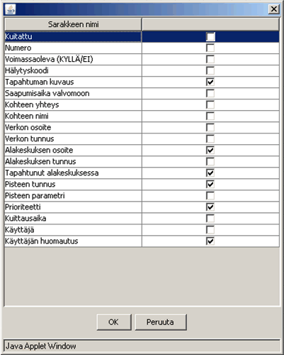

Voit määritellä, mitkä sarakkeet näytetään Hälytyshistoriassa ja Tulevien hälytysten luettelossa.
Näytettävien sarakkeiden valitseminen
Siirry joko Tulevat hälytykset tai Hälytyshistoria.
Napsauta Näytettävät sarakkeet. Uusi keskusteluruutu tulee näkyviin.

Valitse sarakkeiden nimien vieressä olevien valintaruutujen avulla sarakkeet, jotka haluat näytettäviksi.
Napsauta OK.
Huomaa, että tämä toiminto on käytettävissä vain kun olet yhteydessä 963 Serveriin graafisessa tilassa.